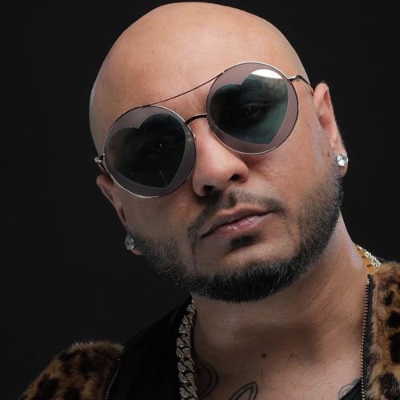

Arijit Singh is an Indian musician, singer, composer, music producer, recordist and a music programmer. At the start of his singing career, he received nominations for the Upcoming Male Vocalist of the Year award at the 2013 Mirchi Music Awards for renditions of "Phir Le Aya Dil" and "Duaa", winning the award for the latter.
Neha Kakkar is an Indian singer. She competed on season 2 of the television reality show Indian Idol in 2006. Now she is a powerful singer of the industry. Neha has been giving back to back super hit playback song since her career journey began. Neha kakkar have strong fan following on various social networking platforms. Kakkar have over 8 Million followers on Instagram Which made her most followed Indian Singer on Instagram.

Pratik Bachan, best known by his stage name B Praak, is an Indian singer and music composer associated with the Punjabi Music industry. He started his career as a music producer, and later debuted as a singer with the song Mann Bharrya. He is a frequent collaborator of lyricist Jaani, and has since entered into Bollywood in 2019 with two songs as singer in the films Kesari and Good Newwz starring Akshay Kumar, and as a guest composer in the satire Bala.